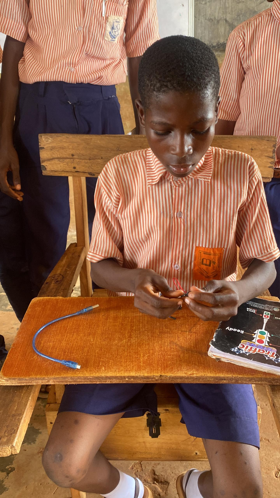
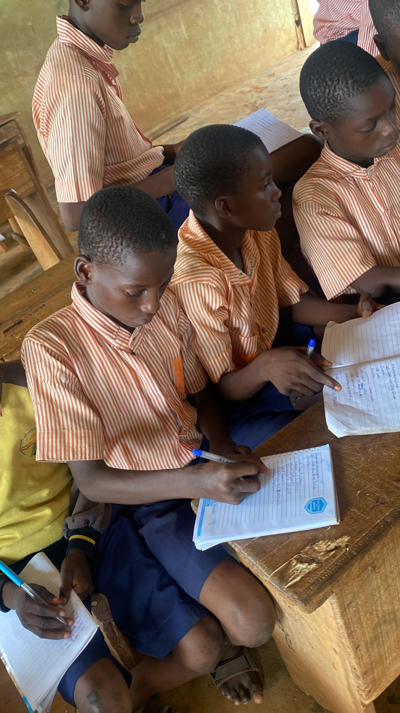
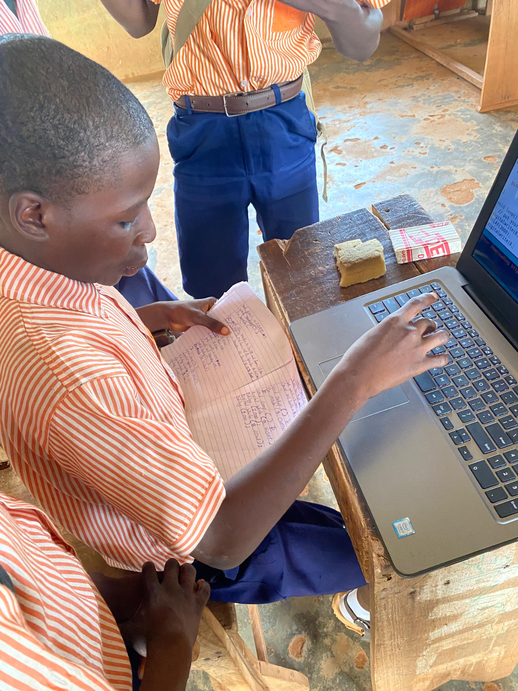
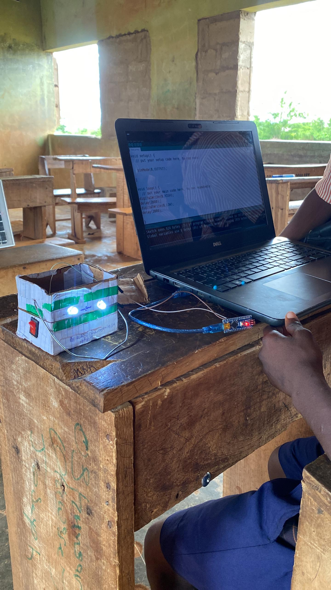
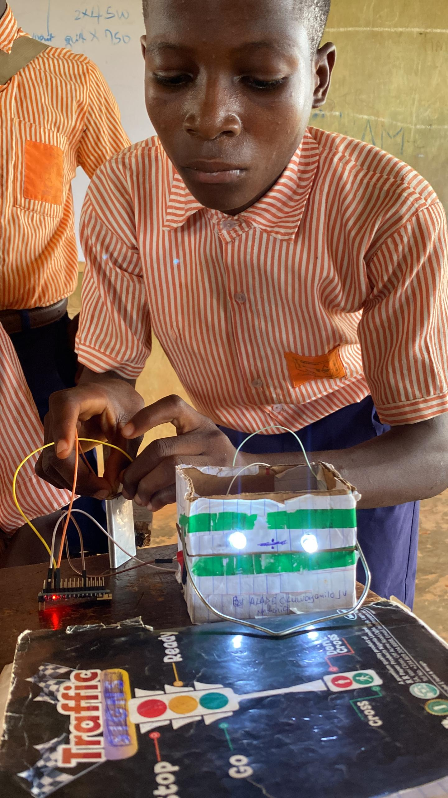

At Shamsudeen Grammar School, innovation didn’t start with a laptop. It started with a notebook. Alade Oluwajomiloju had just been introduced to coding during a Tech with Khalid Foundation (TWiK) outreach session. Like many students in the class, it was his first encounter with programming. But unlike most, he didn’t stop there.


Alade Oluwajomiloju during TWiK First outreach session in Shamsudeen Grammar School. Photo: Tech with Khalid Foundation.
Building Without Tools
With no computer at home, Oluwajomiloju went back and did what he could. He wrote code in his notebook. Line after line, from memory; holding on to what he had just learned, hoping for another opportunity to try. Around him, many students are used to building from whatever they can find—scraps, improvised materials, limited tools. It is not ideal, but it is familiar. What stands out is not the limitation. It is the response to it.
"When access is limited, creativity becomes the tool."
Turning Opportunity Into Action
When the TWiK team returned for another session, Oluwajomiloju didn’t wait. He walked up to a volunteer, notebook in hand, asking for one thing; a review of the code he had written on his own. After the day’s class, while others left, he stayed back. This time, he had access to something he didn’t have before: a laptop. He carefully typed out his code, connected an Arduino board, and uploaded the program. Then he took it further. Using the same knowledge from the first session, he integrated the system into a trafficator project he had built. It worked. With little supervision. With limited tools. But with complete ownership.

Alade Oluwajomiloju during TWiK second outreach session. Photo: Tech with Khalid Foundation.
Then he took it further. Using the same knowledge from the first session, he integrated the system into a trafficator project he had built. It worked. With little supervision. With limited tools. But with complete ownership.
“From notebook to reality, a handwritten idea brought to life through persistence.”
What This Represents
This is more than a student success story. It is a clear example of what happens when exposure meets determination. At Tech with Khalid Foundation, the goal is not just to teach technology. It is to create moments where students begin to see what they can do—regardless of where they are starting from.
- Limited access to devices
- Limited exposure to structured learning
- But unlimited curiosity and potential


Alade Oluwajomiloju during a TWiK outreach session. Photo: Tech with Khalid Foundation.
"Background should never define potential. Opportunity is what unlocks it."
The Impact in Motion
Oluwajomiloju’s story reflects a pattern seen across TWiK’s outreach programs. Give students the right introduction, even briefly, and something shifts. They begin to experiment. They begin to build. They begin to take ownership of their learning. Not because everything is available but because something meaningful has been unlocked.
Why This Matters
There are many more students like Oluwajomiloju. Ideas are being written in notebooks. Projects are being imagined without tools to test them. The gap is not talent. The gap is access. And that gap is where real impact can happen.
Support the Next Builder
More students are ready to learn, build, and solve problems.
- Laptops and digital devices
- Hands-on training and mentorship
- Opportunities to turn ideas into working solutions
Because sometimes, all it takes is one opportunity for potential to become real.
About Tech with Khalid Foundation (TWiK)
Tech with Khalid Foundation is committed to equipping young people with practical digital skills, enabling them to think critically, build solutions, and create meaningful impact in their communities.